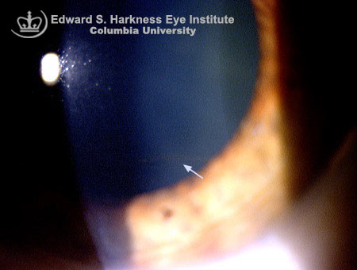

Hudson - Stahli line
* Định nghĩa:
+ Vệt Hudson-Stahli: vệt thoái hóa giác
- Một vệt lắng đọng màu như màu sắt trong biểu mô giác mạc, thường được thấy ở vị trí nối giác mạc 1/3 phía dưới và giữa.
- Thường thấy ở người lớn tuổi.
- Không rõ nguồn gốc gây bệnh.
